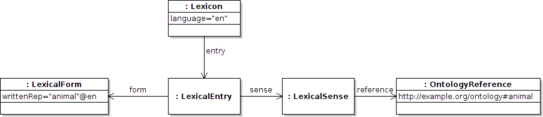

Next: Canonical forms and preferred Up: The lemon core Previous: The lemon core Contents
The lemon core module is intended to have a similar expressive power to that of SKOS (Miles and Bechhofer, 2009), while providing distinctions that allow for more powerful linguistic modeling. For example the simplest version of a lemon entry is as follows:1
@base <http://www.example.org/lexicon> @prefix ontology: <http://www.example.org/ontology#> @prefix lemon: <http://www.monnetproject.eu/lemon#> :myLexicon a lemon:Lexicon ; lemon:language "en" ; lemon:entry :animal . :animal a lemon:LexicalEntry ; lemon:form [ lemon:writtenRep "animal"@en ] ; lemon:sense [ lemon:reference ontology:animal ] .
Please note, for the course of this book we will use Turtle notation2 as it is the quickest and most legible way to write lemon (and RDF in general). Furthermore we will mostly omit the type declarations (e.g., myLexicon is a lemon:Lexicon), as they are generally not necessary and can in all cases be inferred from the RDF Schema document. Also we shall assume in all cases that the prefixes lemon, ontology and the base prefix are as in the first example. For the sake of completion we will present the above example in RDF/XML.
<?xml version="1.0"?>
<rdf:RDF xmlns="http://www.example.org/lexicon#"
xmlns:rdf="http://www.w3.org/1999/02/22-rdf-syntax-ns#"
xmlns:lemon="http://www.monnetproject.eu/lemon#">
<lemon:Lexicon rdf:about="myLexicon" lemon:language="en">
<lemon:entry>
<lemon:LexicalEntry rdf:about="animal">
<lemon:form rdf:parseType="Resource">
<lemon:writtenRep xml:lang="en">animal</lemon:writtenRep>
</lemon:form>
<lemon:sense rdf:parseType="Resource">
<lemon:reference rdf:resource="http://www.example.org/ontology#animal"/>
</lemon:sense>
</lemon:LexicalEntry>
</lemon:entry>
</lemon:Lexicon>
</rdf:RDF>

This example defines the following entities
A second example showing two lexical entries referring to the same ontology entity is as follows:
:myLexicon lemon:entry :animal , :creature ; lemon:language "en" . :animal lemon:form [ lemon:writtenRep "animal"@en ] ; lemon:sense [ lemon:reference ontology:animal ] . :creature lemon:form [ lemon:writtenRep "creature"@en ] ; lemon:sense [ lemon:reference ontology:animal ] .
This indicates that “animal” and “creature” can refer to the same ontology concept and as such they can be considered to be “synonymous” in a sense. The semantics of the lemon model are further discussed in section ![[*]](crossref.png) .
.
John McCrae 2012-07-31